<footer class="site-foot">
	<div class="container site-foot-inner">
		<span class="foot-name">&copy; Joseph Lu &middot; Technical Artist &amp; Unity Developer</span>
		<div class="icon-row">
			<a class="icon-btn js-email" href="#" data-e="moc.liamg@ulhpesoj31" aria-label="Email me" title="Email me"></a>
			<a class="icon-btn" href="https://www.linkedin.com/in/jl4312/" target="_blank" rel="noopener" aria-label="LinkedIn" title="LinkedIn"></a>
			<a class="icon-btn" href="https://www.artstation.com/jl4312" target="_blank" rel="noopener" aria-label="ArtStation" title="ArtStation"></a>
			<a class="icon-btn" href="https://github.com/jl4312" target="_blank" rel="noopener" aria-label="GitHub" title="GitHub"></a>
			<a class="icon-btn" href="https://sketchfab.com/13luj" target="_blank" rel="noopener" aria-label="Sketchfab" title="Sketchfab"></a>
			<a class="icon-btn" href="https://twitter.com/Jo_Lu_Can_Art" target="_blank" rel="noopener" aria-label="X (Twitter)" title="X (Twitter)"></a>
			<a class="icon-btn" href="media/resumeFiles/Lu_resume.pdf" target="_blank" rel="noopener" aria-label="Resume (PDF)" title="Resume (PDF)"></a>
		</div>
	</div>
</footer>
